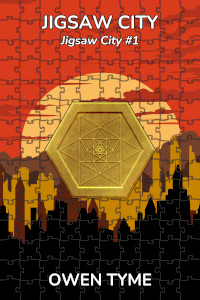
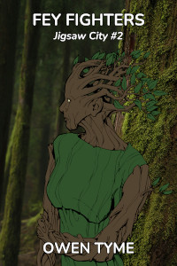
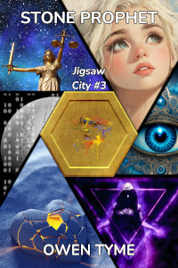
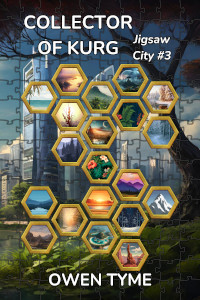
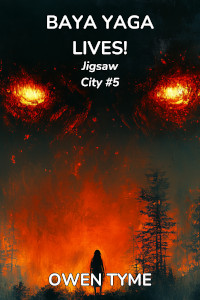
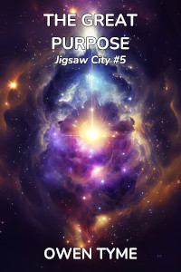
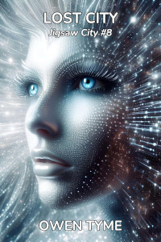

Jigsaw City
Jigsaw City is a sequel series to The Wizard’s Scion, centered around the life of Levi’s daughter, Nicole Jacobs, and her quest to reunite the pieces of a magical city that was broken up millions of years before she was born.
Release Plan
Currently, the plan is to release this series a chapter at a time, on Royal Road. When each volume has been fully posted, they’ll be published both in Ebook and print editions, in many online stores.
For the time being, the Ebooks will not be published via Amazon, because they have exclusivity requirements.
Eventually, the versions in their original, online locations will become short teasers, perhaps six chapters long.
The first chapter of volume one was published on Saturday, March 8, 2025. The rest will follow a chapter at a time, every Tuesday, Thursday and Saturday.
Jigsaw City

Nicole Jacobs is given a small,
hexagonal coin for her twentieth birthday, but during analysis of the
strange, magic trinket, she accidentally copies the magic item’s base
spell into her mind, where it rapidly expands beyond the original
design, slowly consuming her mind from the inside! Nicole reluctantly
seeks out the maker of the item, hoping to find a cure before it’s too
late to save her sanity.
Fey Fighters

On a distant planet tucked away in a
barely explored region of the galaxy, war breaks out between humans that
are forced to land there and the fairies that left Earth during World
War II, because the human race had become too violent to share a planet
with.
Fey Fighters introduces true fairies to the setting, who will also be seen in volume four, where they’ll play a vital role providing exposition and will also play a part in The Great Purpose, due to the linked nature of both demons and fey.
Stone Prophet
 Having accepted the fact that the City of Kurg is permanently bonded to her mind and soul, Nicole seeks to collect all of the missing fragments of the magical city from her home world.
The trouble is, the remaining pieces on her planet were deactivated and don’t speak to her in the irritating way the pieces among the stars do, leaving her frustrated.
Just as she’s researching ways to locate them, a deactivated piece of the city comes to life and Nicole leads the collection mission, herself. She meets a dwarf history miner that’s just found both a piece of Kurg and a fragment of one of the stone men that built Kurg, which whispers into his mind.
The fragment turns out to be a piece of the Seventh Sage, a mad prophet that can see the future.
Convinced the Sage knows where the missing pieces of Kurg are, Nicole collects the rest of him, but the journey is emotionally perilous and along the way, Nicole is forced to take three lives, by her own hand.
Just as she’s reeling from the consequences, she completes the Sage, not knowing it harbors a parasitic soul that’s taken over: one of the most powerful necromancers that’s ever lived. The ancient witch seeks to defeat Nicole and take her place in the Sage’s prophesies.
Will Nicole win the day, or will the witch steal both her soul and her fate?
Stone Prophet brings Nicole’s adopted mother into the series, as Nicole encounters her in the most disreputable port on the ocean side of the planet.
Collector of Kurg
 Having collected the fragments of Kurg on her home planet, Nicole turns her gaze upward, to the stars of the Milky Way, soon coming into conflict with ancient monsters, aliens, gun-slinging snails, monkeys with crossbows, giants and even fairies.
This one is likely to be a collection of short, but connected tales, rather than a novel, with each planet visited being its own story.
Baba Yaga Lives!
 Baba Yaga started out wanting to live a little longer, falling to the temptations of necromancy to extend her life, gaining a mere decade or so with each human soul she consumes. Eventually growing dissatisfied with such meager fare, she turns her attention to consuming the souls of magical creatures for the extra power they contain and her body slowly becomes more magic than flesh, transforming her into a thaumavore.
However, with the rise of science and magical creatures of the galaxy growing wise to her tricks, there’s precious little for her to eat. She can’t afford the hefty price enchanted items sell for on the galactic market and finds their weak magic unsatisfying, anyway, but she does come across a rare and undervalued curio: one of the hexagonal coins that make up the magical City of Kurg, an object so impossibly filled with magic, it has the power to resist her every attempt to consume it!
She seeks to unlock the hidden power of the coin, hoping to extend her life until the end of time with its nearly limitless magic. Unfortunately for her, not just anyone can access the magic of Kurg, something only a city administrator can do. Learning this fact by touching the mind of the coin, she seeks a conversation with Nicole, the only available administrator.
Nicole’s quest to collect the missing pieces of the City of Kurg brings her right to Baba Yaga’s doorstep and since their goals are nothing alike and totally at odds, the meeting devolves into a magical duel! War for ownership of the city follows, eventually leading to a sprawling battle inside the legendary chicken-legged hut of Baba Yaga, a magically-folded, mind-bending space that would give even M. C. Escher a headache!
Will Nicole overcome the crone’s superior, time-tested spells or will Nicole, as an extension of Kurg, become Baba Yaga’s living larder?
Baba Yaga Lives! will bring legendary magical creatures to the city, including Levi’s old familiar, Inorath, because Nicole will need information on Baba Yaga and many of them are even older than the ancient witch.
The Great Purpose
 In this volume of Jigsaw City, the true purpose of Kurg is revealed: it was designed as a powerful weapon for fighting a war that’s as old as the universe. The Life Giver is back, in need of Nicole and her city’s power, while the Life Giver’s nemesis, The Void, attempts to invade the Milky Way, to begin consuming everyone and everything there.
The Great Purpose will bring the Hunter from Ashen Blades to the city, to combat a nearly limitless supply of demons, because they’ve finally succeeded in opening a stable portal to the galaxy. It will also involve the Hunter’s arch-nemesis, Vogerath, since the portal was his plan.
Lost City
 Nicole and the Hunter may have won the battle with demon-kind and The Void, but the cost is extremely high: Nicole sacrifices her life for the success of their crazy suicide mission and the Hunter finally reaches the limits of both her demon and witch powers, with disastrous consequences.
Nicole’s body is restored by automatic functions of the City of Kurg, but her mind is shattered by re-birth as its living avatar. Lost, confused and alone, will Nicole ever return to her home and those she loves or will she forever wander a dying, parallel universe, seeking a home she can’t even remember?
Meanwhile, the Hunter is also lost and alone, but in immediate peril. She emerges from the spatial tear formed by The Void’s final kick at thirty-thousand feet above a strange, alien planet, with absolutely no idea where she is. Even worse, she’s lost the power of the elements and been left to her own devices, totally unable to fly. Will she survive the fall and find some way to get home or will she remain forever lost?
The Memory Hunt
Nicole discovers the fact that her memories were backed up by the city before she was killed, but unlike her body, it was unable to fully restore her mind.
Seeking to regain a greater measure of humanity, Nicole goes back to collecting lost fragments of the City of Kurg, mostly for the sake of restoring her memories.
This takes her beyond the galaxy she knows, to far-flung areas of the multiverse, because when the ancient city broke up, parts of it left the galaxy, while some few traveled to parallel universes.